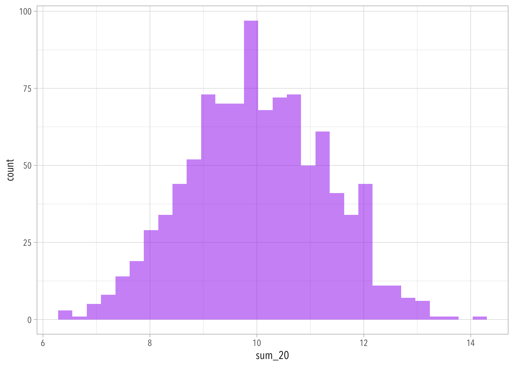

quantile() displays the values from x at each sample quantile. The lowest value of x corresponds to 0 and the highest value of x corresponds to 100.
4.3
quantile(x, probs=c(0.005,0.995))
0.5% 99.5%
-2.576311 2.581449
4.4
betw_check <- x[x <2.576& x >-2.576]length(betw_check) /length(x)
[1] 0.98988
4.5
sims <-tibble(trial =1:1000) |>rowwise() |>mutate(sum_20 =sum(runif(n =20, min =0, max =1)))ggplot(sims, aes(x=sum_20)) +geom_histogram(fill="purple", alpha=0.5)
`stat_bin()` using `bins = 30`. Pick better value with `binwidth`.

Standard error:
sd(sims$sum_20) # Literal standard error
[1] 1.292754
sqrt(20/12) # Formula standard error
[1] 1.290994
4.6
Generally 30 is enough samples to start seeing the inherent standard random distribution of values inherent to a random trial.
# last time from GSS we got ~.33 estimate of the proportion conservative# how confident should we be in this estimate?# set up simulation "dresser"set.seed(123)est_prop <- .33num_sims <-10000# how many do I want to do?svy_size <-30# number of people in each "poll" SWITCHED TO 30sims <-tibble(sim_num =1:num_sims) |>uncount(svy_size)# do the simssims <- sims |>mutate(conservative =rbinom(num_sims*svy_size, 1, est_prop)) |>group_by(sim_num) |>summarize(prop =mean(conservative))std_error <-sqrt((1/3) * (2/3) / svy_size)2*std_error # 95% CI should be ~2 standard errors from 0.33
If we reduce the svy_size to 30, we can see that the 95% CI is not very close to 2 standard errors from .33 any more. Re-running with values svy_sizes that approach 1000 it gets much closer.
While I never assumed such a small n as 30 would give us good results, I now understand why in a bit more detail.